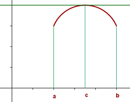
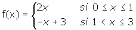
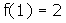
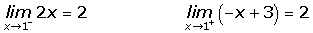
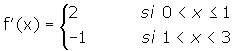
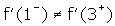
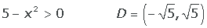
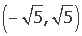
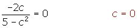

Teorema de Rolle
Si una función es:
Continua en [a, b]
Derivable en (a, b)
Y si f(a) = f(b)
Entonces, existe algún punto c  (a, b) en el que f'(c) = 0.
(a, b) en el que f'(c) = 0.

La interpretación gráfica del teorema de Rolle nos dice que hay un punto en el que la tangente es paralela al eje de abscisas.
Ejemplos
1. Estudiar si se verifica el teorema de Rolle en el intervalo [0, 3] de la función:

En primer lugar comprobamos que la función es continua en x = 1.


En segundo lugar comprobamos si la función es derivable en x = 1.


Como las derivadas laterales no coinciden, la función no es derivable en el intervalo (0, 3) y por tanto no se cumple el teorema de Rolle.
2.¿Es aplicable el teorema de Rolle a la función f(x) = ln (5 − x2) en el intervalo [−2, 2]?
En primer lugar calculamos el dominio de la función.

La función es continua en el intervalo [−2, 2] y derivable en (−2, 2), porque los intervalos están contenidos en .
Además se cumple que f(−2) = f(2), por tanto es aplicable el teorema de Rolle.

3.Comprobar que la ecuación x7 + 3x + 3 = 0 tiene una única solución real.
La función f(x) = x7 + 3x + 3 es continua y derivable en  ·
·
f(−1) = −1
f(0) = 3
Por tanto la ecuación tiene al menos una solución en el intervalo (−1, 0).
Teorema de Rolle.
f' (x) = 7x6 + 3
Como la derivada no se anula en ningún valor está en contradicción con el teorema de Rolle, por tanto sólo tiene una raíz real.